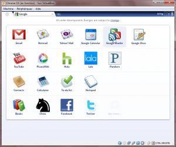

22 novembre 2009
Chrome OS
Google viens de publier le code source de son nouveau système d'exploitation Chrome OS.
Basé sur Linux/Debian, le système démarre très rapidement (quelques secondes) pour pouvoir accéder directement à Internet.
Le système s'appuie sur les différents services Google (Gmail, Calendar, GReader, Docs, YouTube, PicasaWeb, Books) mais aussi sur des raccourcis vers différents services tiers (Twitter, Facebook, Hotmail, Yahoo! Mail, Pandora, Hulu) le tout dans le navigateur Google Chrome.


Après avoir testé une première version, je ne sais pas trop quoi en penser... le système peut être pratique si l'on veut vérifier ses mails ou travailler sur un document, mais lorsque l'on doit réaliser des opérations plus complexes (édition photo/vidéo, programmation...) il faut un véritable système d'exploitation. De plus le système verouille l'accès a votre disque dur (aucun moyen d'écouter une musique stockée dessus par exemple) seul les clés usb seraient accessibles. Toutes extensions ou applications supplémentaires ne sera pas stocké sur votre ordinateur mais sur le net. Je trouve cela assez limité (surtout pour l'usage d'un netbook en déplacement) bien qu'il y ait le système Google Gears qui permet de faire fonctionner certains services en mode hors ligne.) Pour moi, une réelle alternative serait un "Mozilla OS" avec l'écosystème XUL, avec bien sûr Firefox, mais aussi Thunderbird, Songbird, KompoZer, InstantBird, Prism, Sunbird...
Commentaires 3